PROJECT: Tagline
About the project
My team of 5 software engineering students were tasked with enhancing a basic command line interface desktop AddressBook application for our Software Engineering project. We chose to morph it into a note management application called TagLine. This enhanced application enables students to store their notes in a centralised application; organise notes related to contact, topic or project group; and filter and find their notes with ease.
This is what our project looks like:

My role was to design and write the codes for the note commands, including basic add, delete, edit command as well as a filter feature. The following sections illustrate these enhancements in more detail, as well as the relevant documentation I have added to the user and developer guides in relation to these enhancements.
Summary of contributions
This section shows a summary of my coding, documentation, and other helpful contributions to the team project.
Enhancement added: I added the ability to store and filter notes
-
What it does:
-
The
note createcommand creates and stores a note to TagLine. -
The
note deletecommand deletes the note from TagLine. -
The
note editcommand edits the note in TagLine. -
The
note listcommand filters and list notes according to the user input provided.
-
-
Justification: In the case that the notes in TagLine grows, it will be difficult to find notes. The
note listcommand allows users to easily find and filter the notes that they require. -
Highlight
-
Note filtering work with both keyword filtering as well as tag filtering. A user can specify a keyword, if the keyword is found in note content or title, the note will be displayed. Users can also tag their notes to organise them, as implemented by other members. The
note listcommand can filter the notes using tags. -
An in-depth analysis of design alternatives was necessary for the code style and design to be consistent with other features. Also, future changes and additions should be easy to be implemented if need be.
-
The implementation was challenging as TagLine has 3 different tags – Hashtags, Contact as tag, and Group name as tag. The note list command has to be implemented such that the filtering applies generally to all 3 tags.
-
Credit: The architecture and code of note create/delete/edit commands were reused and morphed from AddressBook commands.
-
Code contributed: Please click these links to see a sample of my code: [Functional code ] [Test code]
Other contributions:
-
Documentation:
-
Add the logic of note commands in developer guide after their addition to TagLine: NoteLogic
-
-
Community:
-
Reviewed and offered suggestions for Developer Guide of other teams in class (examples: SecureIT#22)
-
Contributions to the User Guide
We had to update the original AddressBook User Guide with instructions for the enhancements that we had added. The following is an excerpt from our TagLine User Guide, showing additions that I have made for the |
Manage your notes: note
Tagline can help people to manage their notes easily. When you use note commands, a view that displays a list of notes will appear in the right pane. The left pane still displays a chat bot for user interaction.

Creates a note: create
Creates a new note. If any tags are listed, the note will be tagged with them.
Notes without title will be titled "Untitled Note"
Format:
note create [--T TITLE] [--c CONTENT] [--t TAG]*
| TITLE and CONTENT can be optional if the other is defined but cannot be both empty. |
Example:
-
Let’s say you found a resource link that can be referenced for your assignment and you would like to make a note. You can create a note with the resource link as the content with the following command
note create --T MIPS --c https://en.wikipedia.org/wiki/MIPS_architecture --t #assignment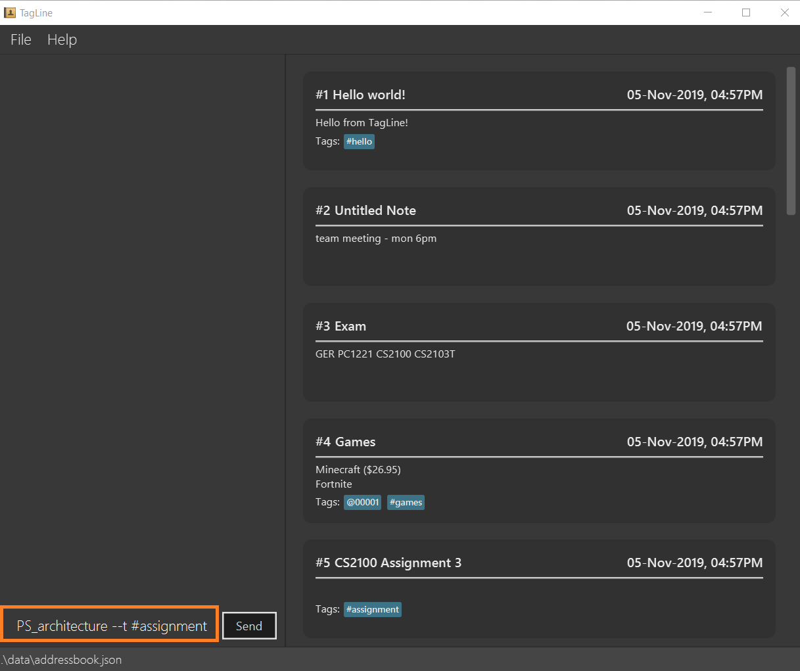Figure 3. Enteringnote createcommand -
A note is created with the title "MIPS" and content "https://en.wikipedia.org/wiki/MIPS_architecture". The note is also tagged with the hashtag "assignment".
The note created is displayed in the right pane. Figure 4. Note created after command execution
Figure 4. Note created after command execution
Upload of image will be supported in v2.0
==== Delete a note: delete
|
Deletes a note.
Format:
note delete NOTE_ID
| As assigned note id is static, deleted note id are not reassigned. |
Example:
-
If you have completed your assignment and would like to delete the note related to the resource link, you can delete with the command
note delete 16.
As the note id is "00016", you can enter "16" as the NOTE_ID parameter.Figure 5. Enteringnote deletecommand -
The note will be deleted from TagLine.
 Figure 6. Note deleted after command execution
Figure 6. Note deleted after command execution==== Edit a note:
edit
Edits a saved note.
Format:
note edit NOTE_ID [--T NEW_TITLE] [--c NEW_CONTENT]
| Enter the parameters to update. |
Example:
-
If you find that your note title should have more information, you can enter the command
note edit 16 --T CS2100 Assignment: MIPS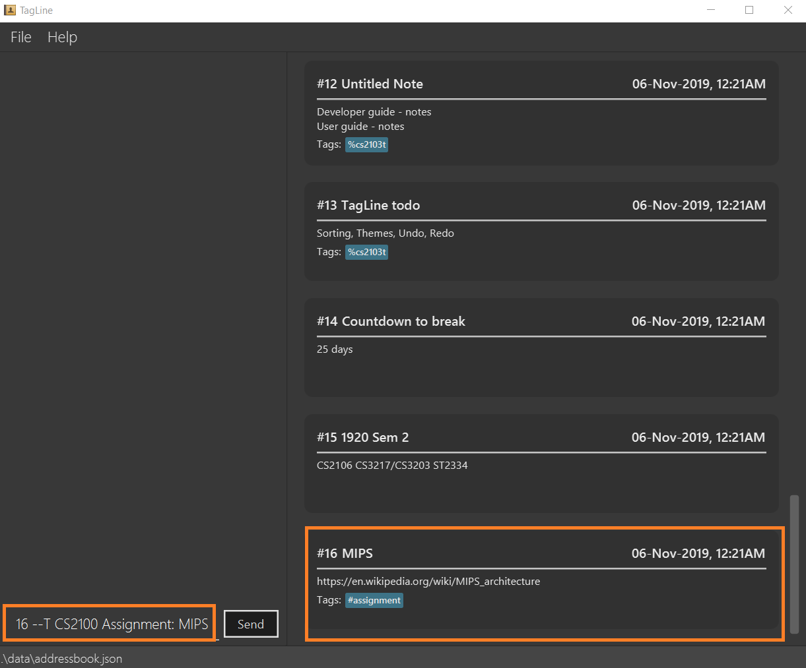Figure 7. Enteringnote editcommand -
The title of the note will be changed from "MIPS" to "CS2100 Assignment: MIPS".
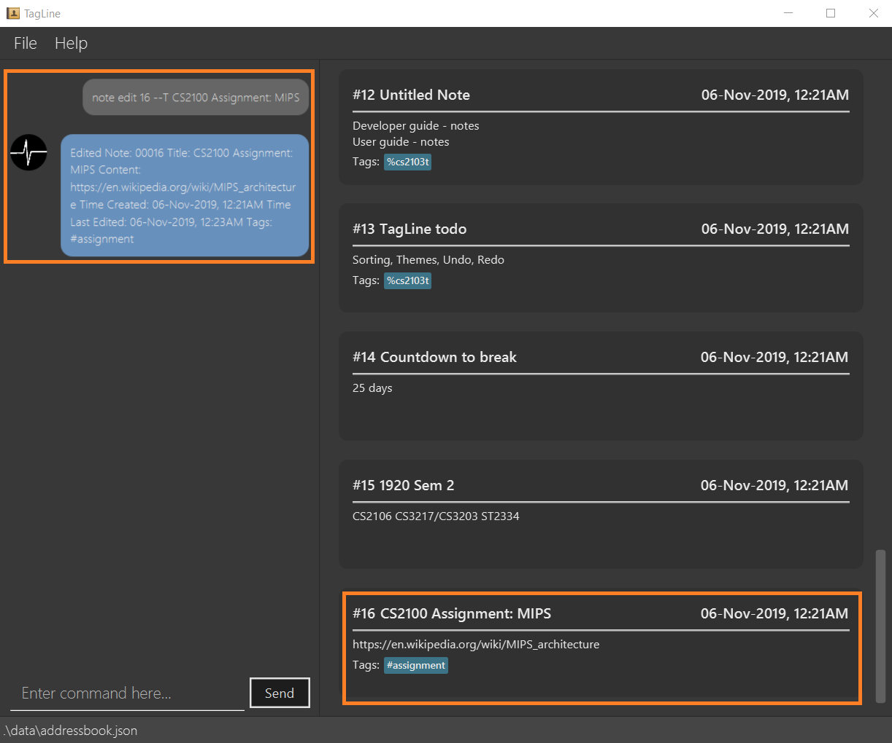Figure 8. Note edited after command execution
|
Upload of image will be supported in v2.0 Partial editing will be supported in v2.0 |
List notes: list
Lists all notes in the application. Filters can be applied to show only notes related to certain keywords, hashtags, users or groups.
Format:
note list [# / @ / %][FILTER]
Example:
| Format | Example | Outcome |
|---|---|---|
|
|
Lists all notes. |
|
|
Lists all notes which contain the phrase “meeting”. |
|
|
Lists all notes with the hashtag '#cs2100'. |
|
|
Lists all notes tagged with the contact of ID '12345'. |
|
|
Lists all notes tagged with the group 'cs2103 team'. |
-
When you would like to see all the notes you have in TagLine, you can enter the command
note list.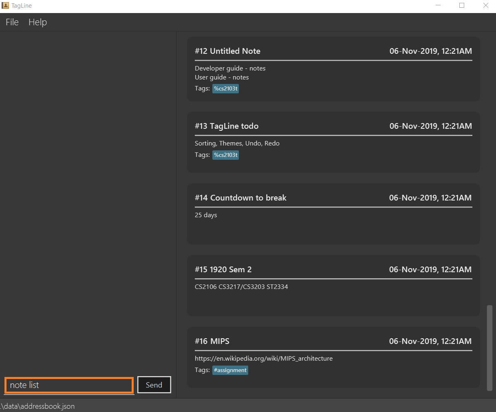Figure 9. Enteringnote listcommand -
All notes are displayed.
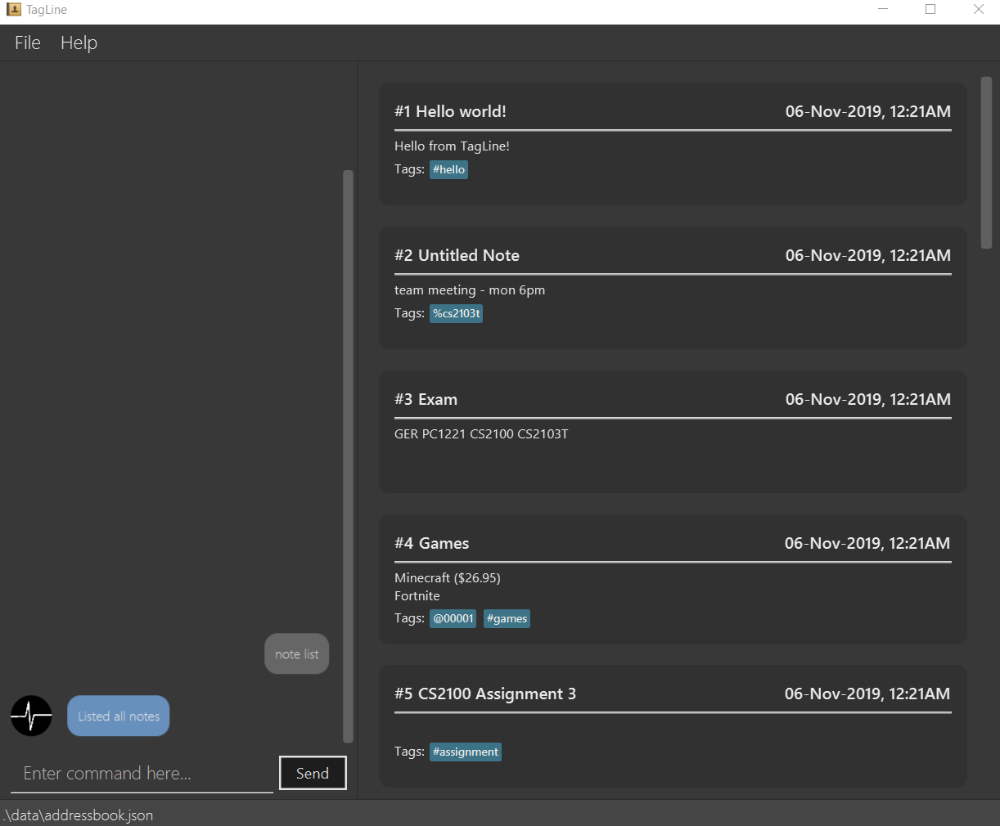Figure 10. All notes displayed -
When you would like to find the notes containing the keyword "cs", you can enter the command
note list cs.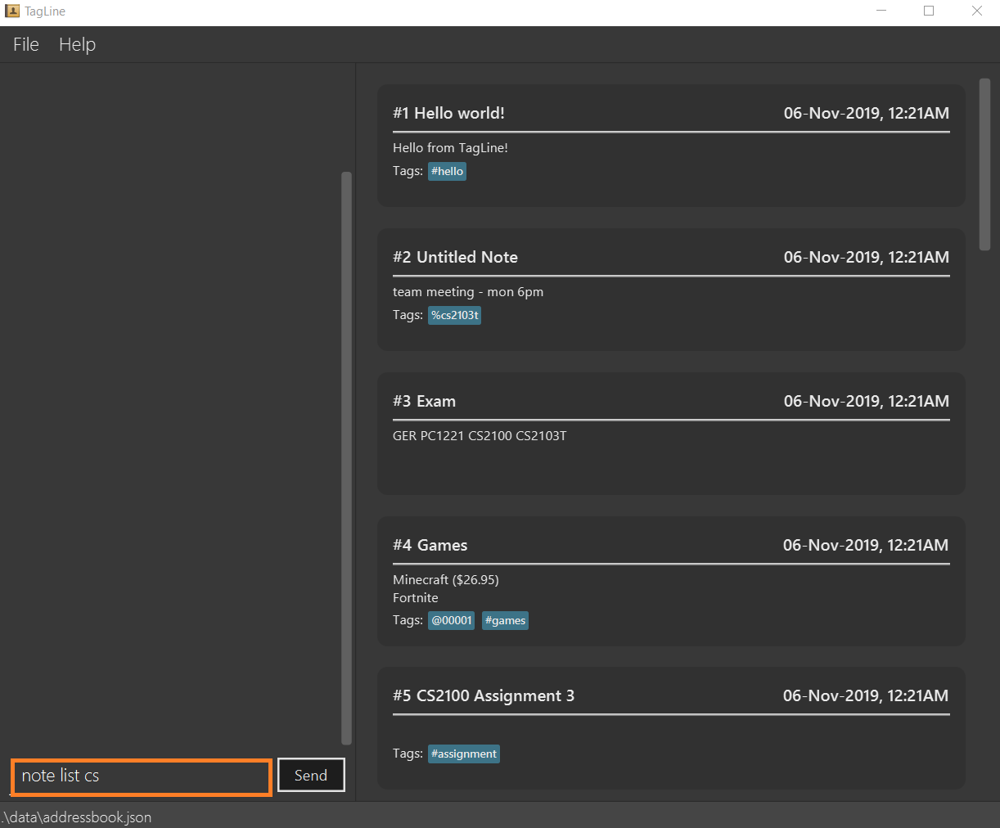Figure 11. Enteringnote listcommand with keyword -
Notes with the keyword "cs" found in the title or content are displayed.
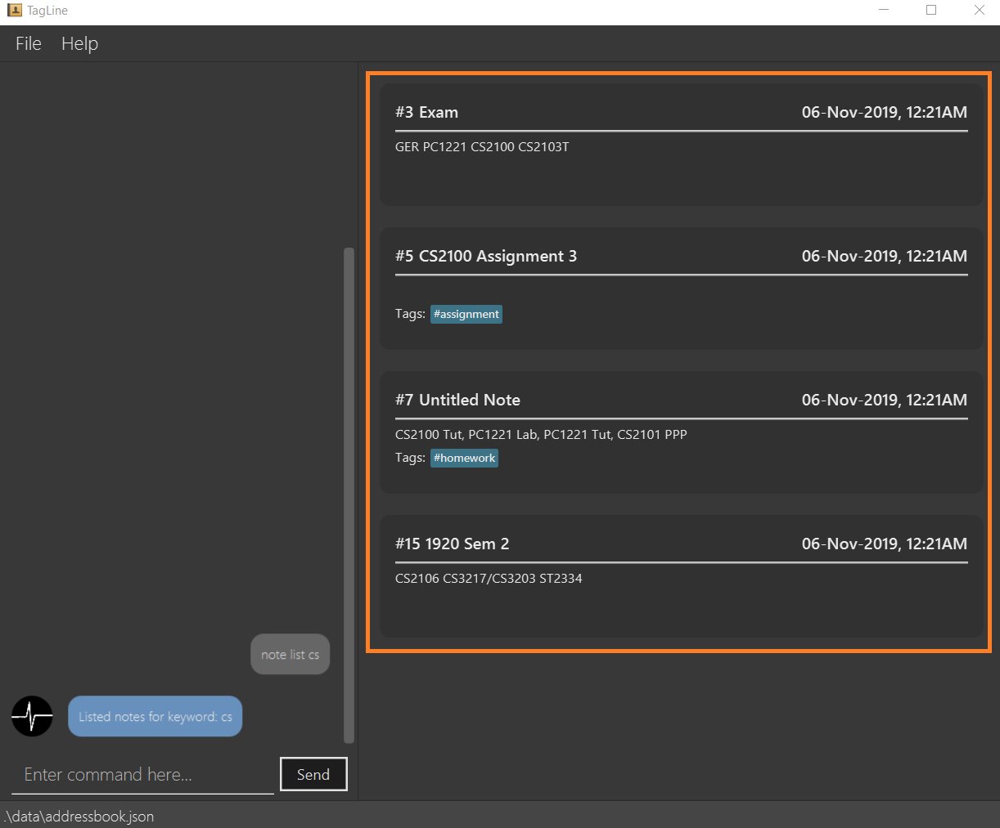Figure 12. Notes containing keyword displayed -
When you would like to see the notes tagged with the hashtag "assignment", you can enter the command
note list #assignment.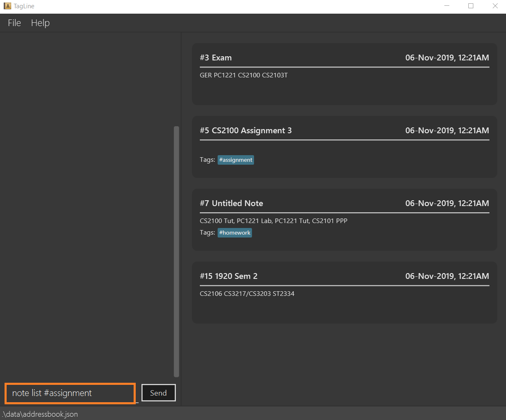Figure 13. Enteringnote listcommand with tag filter -
Notes tagged with "#assignment" are displayed.
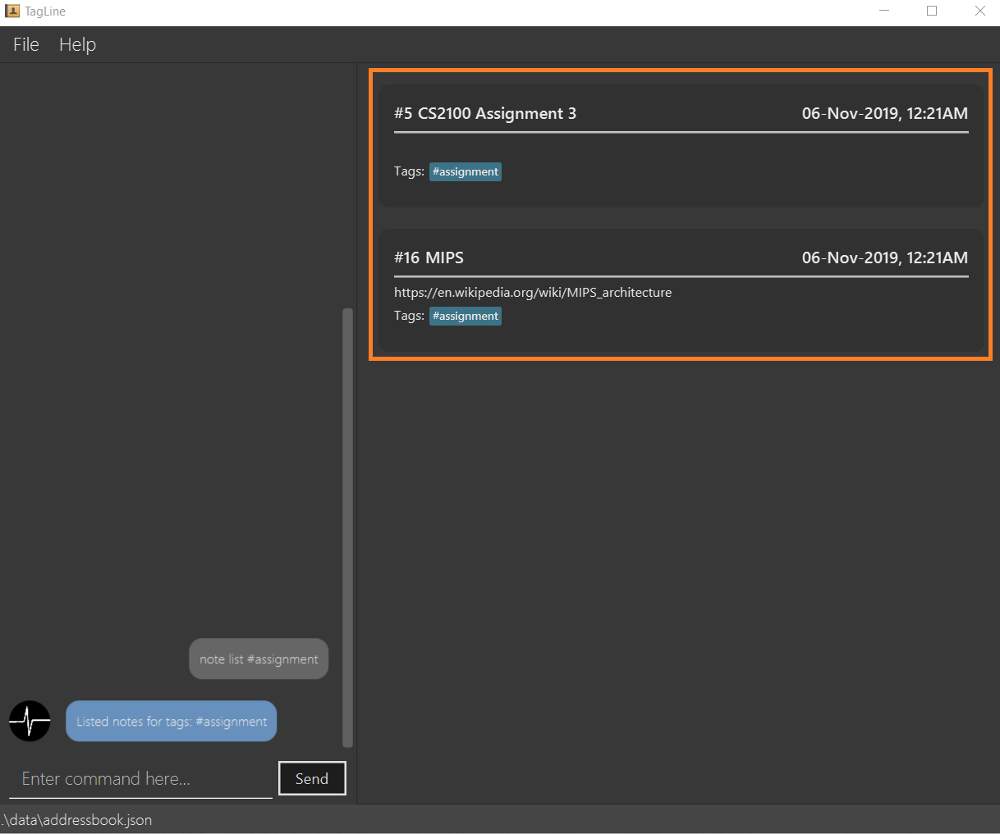Figure 14. Filtered tagged notes displayed -
When you would like to filter by multiple tags, you can enter the command
note list @00001 %cs2103t.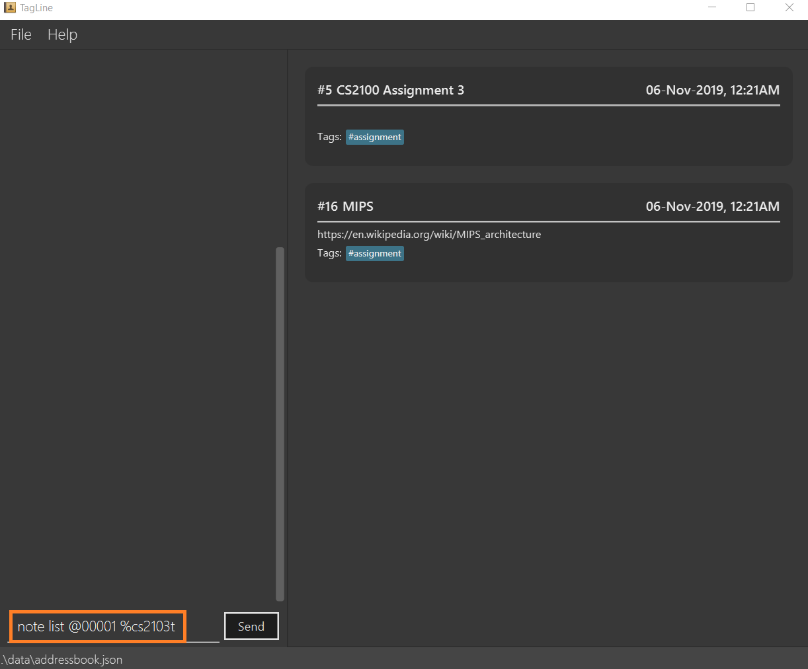Figure 15. Enteringnote listcommand with multiple tag filter -
Notes tagged with contact of contact id "1" or with group with group name "cs2103t" are displayed.
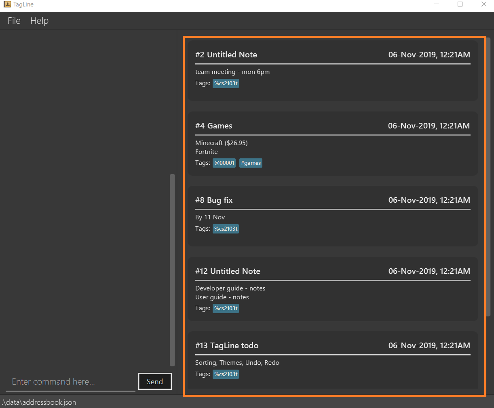Figure 16. Filtered notes displayed==== Clear all notes:
clearClears all notes.
Format:
note clear
Executing this command will trigger a confirmation in the chatbot:
Please confirm some additional details for the command. Press the escape key to abort.
Are you sure you want to clear your contact list? Enter 'Y' to continue.
If you answer "Y", the chatbot will clear all data in your contact list.
If you press the ESC key, the command will be aborted.
Contributions to the Developer Guide
The following section shows my additions to the TagLine Developer Guide for the |
Note filtering feature
Description
The user can filter notes by providing a filter in the note list command.
Types of filter:
-
No prefix - filter by String keyword
-
Prefix
#- filter by hashtag -
Prefix
@- filter by contact -
Prefix
%- filter by group
Implementation
The note filter mechanism is facilitated by the NoteFilter class.
It contains the filter value and the enum FilterType.
A NoteFilter is generated by the NoteFilterUtil inner class in ListNoteParser and passed into ListNoteCommand.
ListNoteCommand then creates a Predicate based on the filter and updates the list of notes in the UI via Model.
Filter by String keyword
Filter by keyword is facilitated by the following classes:
-
KeywordFilter- implementation ofNoteFilterthat is passed intoListNoteCommand -
NoteContainsKeywordsPredicate-Predicatepassed intoModel#updateFilteredNoteList()to list only notes that contain the keywords.
Given below is an example scenario where the user enters a command to filter notes by keywords.
Step 1: The user command is passed through the LogicManager to ListNoteParser. ListNoteParser checks the input arguments and identify the String keywords.
The keywords are passed into NoteFilterUtil#generateKeywordFilter() which returns a KeywordFilter containing the keywords and FilterType.KEYWORD.

note list user command to obtain a ListNoteCommandStep 2: The ListNoteCommand returned will be executed by the LogicManager. If a NoteFilter exists and is of FilterType.KEYWORD, ListNoteCommand#filterAndListByKeyword() will be called.

ListNoteCommand to update filtered note list by keyword in ModelThe method will create a NoteContainsKeywordsPredicate and update the list of notes to be displayed via Model#updateFilteredNoteList().

Filter by Tag
Filter by Tag is facilitated by the following classes/methods:
-
TagParserUtil#parseTag()- to obtain theTagobjects from the user input tag strings -
TagFilter- implementation ofNoteFilterthat is passed intoListNoteCommand -
NoteContainsTagsPredicate-Predicatepassed intoModel#updateFilteredNoteList()to list only notes that is tagged by specifiedTag
Given below is an example scenario where the user enters a command to filter notes by tag.
Step 1: Similar to filtering by keyword, the user command is passed to the ListNoteParser. The ListNoteParser checks the input arguments and identify the tag strings.
The tag strings are passed into NoteFilterUtil#generateTagFilter(). TagParserUtil#parseTag() is called to get Tag from the tag string. TagFilter containing the list of tags and FilterType.TAG is returned.

ListNoteCommandStep 2: The ListNoteCommand returned will be executed by the LogicManager. If a NoteFilter exists and is of FilterType.TAG, ListNoteCommand#filterAndListByTag() will be called.

ListNoteCommand to update filtered note list by Tag in ModelThe method will check if the tags in the NoteFilter exists via Model#findTag(). If a Tag does not exist, an error message will be displayed.
If all tags exist, the tags will be passed into the NoteContainsTagsPredicate and update the list of notes to be displayed via Model#updateFilteredNoteList().